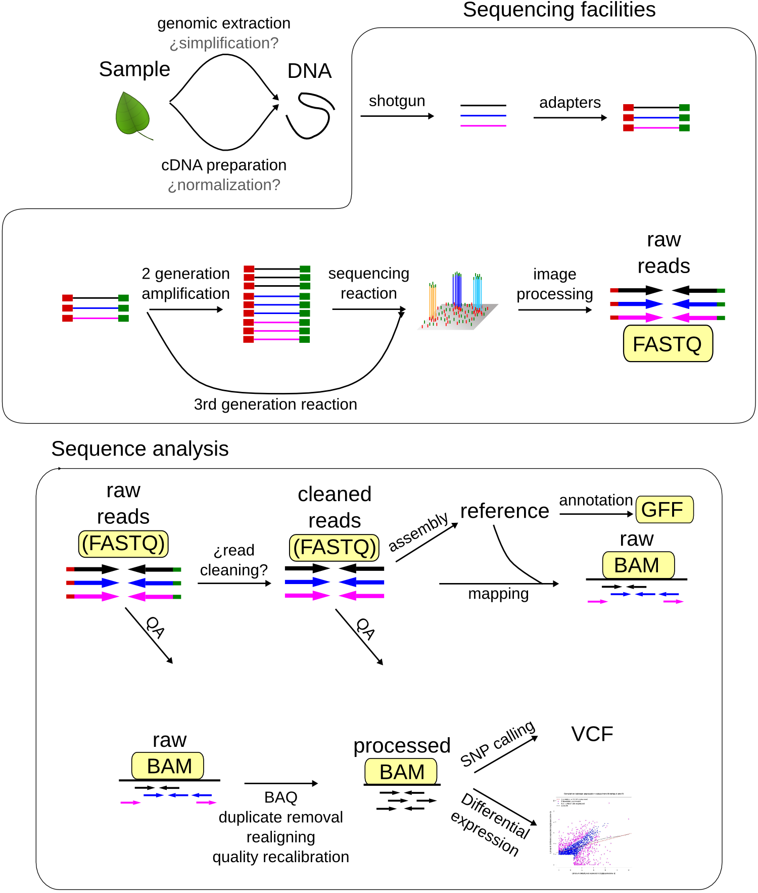
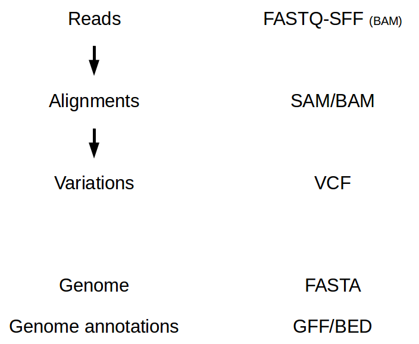

NGS file formats¶
There are lots of file formats related to NGS analyses. The most common ones are:
 Sequence file formats¶
The different sequence related formats include different information about the sequence. The most common file formats in the NGS world are: fastq and sff.
SFF¶
The SFF (Standard Flowgram Format) files are the 454 equivalent to the ABI chromatogram files. They hold information about:
the flowgram,
the called sequence,
the qualities,
and the recommended quality and adaptor clipping.
These recommended clippings are given by the 454 sequencer. The Roche software takes into account the quality and the adaptor sequence to recommend a clipping for each sequence. Like the ABI files, these are binary files that should be opened with specialized programs. There are several tools to extract the sequences and to convert them to a more usable format. Roche provides one executable able to do it with the 454 machine. Alternatively we can use the sff_extract tool to obtain a fasta file.
Fasta¶
The fasta format is based on a simple text. Each sequence starts with a “>” followed by the sequence name, an space and, optionally, the description
>seq_1 description
GATTTGGGGTTCAAAGCAGTATCGATCAAATAGTAAATCCATTTGTTCAACTCACAGTTT
>seq_2
ATCGTAGTCTAGTCTATGCTAGTGCGATGCTAGTGCTAGTCGTATGCATGGCTATGTGTG
Usually, if we have quality information, another fasta file with the quality information could be provided. In this cases both the sequence and the quality file should have the sequences in the same order.
>seq_1 description
54 57 54 57 48 48 48 48 57 57 57 47 47 41 42 41 47 57 57 57 57 47 44 44 44 44 50 50
54 57 57 46 43 37 44 43 57 37 37 37 57 57 57 57 52 52 52 52 57 50 47 47 52
>seq_2
52 47 52 52 50 50 50 50 50 57 57 54 57 57 57 57 57 57 57 46 46 57 57 57 57 57 57 57
57 57 57 57 57 57 57 57 57 57 57 57 29 29
sanger fastq¶
The fastq format was developed to provide a convenient way of storing the sequence and the quality scores in the same file. These are text files and they look like:
@seq_1
GATTTGGGGTTCAAAGCAGTATCGATCAAATAGTAAATCCATTTGTTCAACTCACAGTTT
+
!''*((((***+))%%%++)(%%%%).1***-+*''))**55CCF>>>>>>CCCCCCC65
@seq_2
ATCGTAGTCTAGTCTATGCTAGTGCGATGCTAGTGCTAGTCGTATGCATGGCTATGTGTG
+
208DA8308AD8SF83FH0SD8F08APFIDJFN34JW830UDS8UFDSADPFIJ3N8DAA
In this file every sequence has 4 lines. In the first line we get the sequence name after the symbol “@” and, optionally, the description. The second line has the sequence and the fourth line has the quality scores encoded as letters.
Quality coding (modified from wikipedia).
SSSSSSSSSSSSSSSSSSSSSSSSSSSSSSSSSSSSSSSSSSSSSSSSSSSSSSSSSSSSSSSSSSSSSSSS......................
..........................XXXXXXXXXXXXXXXXXXXXXXXXXXXXXXXXXXXXXXXXXXXXXX......................
...............................IIIIIIIIIIIIIIIIIIIIIIIIIIIIIIIIIIIIIIIII......................
!"#$%&'()*+,-./0123456789:;<=>?@ABCDEFGHIJKLMNOPQRSTUVWXYZ[\]^_`abcdefghijklmnopqrstuvwxyz{|}~
| | | | | |
33 59 64 73 104 126
S - Sanger Phred+33, raw reads typically (0, 40)
X - Solexa Solexa+64, raw reads typically (-5, 40)
I - Illumina Phred+64, raw reads typically (0, 40)
Illummina fastq¶
This file is almost identical to a sanger fastq file, but the encoding for the quality scores is different. When we deal with a fastq file we have to be sure about which kind of file we are dealing with, an illumina fastq or a sanger fastq. Unfortunately they are not easy to differentiate. Also you have to take into account that solexa used to had a third fastq format, the solexa fastq, although this one is mostly obsoleted. Recently Illumina has also decided to distribute its files as Sanger fastq, so the Illumina fastq will be not used any more.
One of the seq_crumbs utilities, guess_seq_format, is able to differentiate the Sanger from the Illumina version by looking for quality characters exclusive of the Sanger version.
SRA¶
SRA is the file format in which all NCBI SRA content is provided. SRA files are binary files and we need specific tools to extract the information. There is a toolkit (SRA Toolkit)developed by NCBI to deal with these binary files.
Compressed files¶
Sometime these sequence text file can be found compressed to save up hard drive space. The most common compression formats are gzip and bgzip. bgzip is a gzip variant commonly used in genomics because, although it is a little less efficient in the compression ratio, it allows random access. Most software is becoming compatible with these formats.
Paired files¶
It is common to obtain two reads from a single molecule. Examples of these techniques are the Illumina pair-ends and mate-pairs. In this cases for each read there is another paired read. One common way to store those paired reads is to create to fastq files, one for the first read of the pairs and another one for the second. In this case the files should hold the reads exactly in the same order.
Fastq file 1
@molecule_1 1st_read_from_pair
@molecule_2 1st_read_from_pair
@molecule_3 1st_read_from_pair
Fastq file 2
@molecule_1 2nd_read_from_pair
@molecule_2 2nd_read_from_pair
@molecule_3 2nd_read_from_pair
Another option is to interleave the reads in a single file alternating the first and second read for each pair.
Interleaved Fastq file
@molecule_1 1st_read_from_pair
@molecule_1 2nd_read_from_pair
@molecule_2 1st_read_from_pair
@molecule_2 2nd_read_from_pair
@molecule_3 1st_read_from_pair
@molecule_3 2nd_read_from_pair
Depending on the software that we want to use we should the interleaved or the two file version; but most of actual ones use the one file version.
SRA toolkit¶
Download the sra file (file info) and use fastq-dump to convert to fastq format.
First, you can run the program with the default options and look at the output file:
ngs_user@ngsmachine:~$ fastq-dump SRR2970642
Depending on the software that we want to use we should the interleaved or the two file version; but most of actual ones use the one file version.
Is this useful? Taking into account that the reads are paired reads, can we improve the conversion?:
ngs_user@ngsmachine:~$ fastq-dump --split-files --defline-qual "+" --defline-seq '@$sn/$ri' --gzip SRR2970642

{kind=link}
{kind=link}